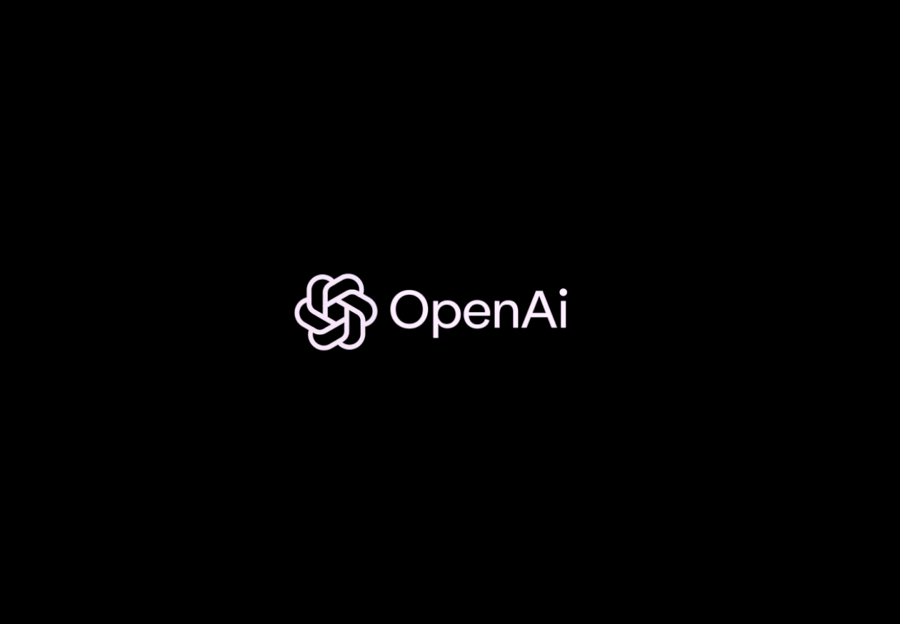

👨🎓 Gabriel – ChatGPT
Por que escolhi:
Foi uma das IAs mais equilibradas em todas as categorias.
Teve ótimo desempenho em explicação, resumo e correção de textos.
É uma das ferramentas mais conhecidas e utilizadas atualmente.
Pontos fortes:
Explica conteúdos de forma clara e organizada.
Consegue adaptar a linguagem dependendo do nível da pergunta.
É muito eficiente para resumir textos mantendo as ideias principais.
Ajuda tanto em dúvidas simples quanto em explicações mais detalhadas.
Tem boa capacidade de organizar informações de maneira lógica.
Ponto fraco:
Não foi a melhor na criação de imagens.
Em alguns casos pode dar respostas mais genéricas se a pergunta não for específica.
Fechamento natural:
“O ChatGPT se destacou pelo equilíbrio e pela clareza nas explicações, sendo uma ferramenta muito completa para estudos.”
